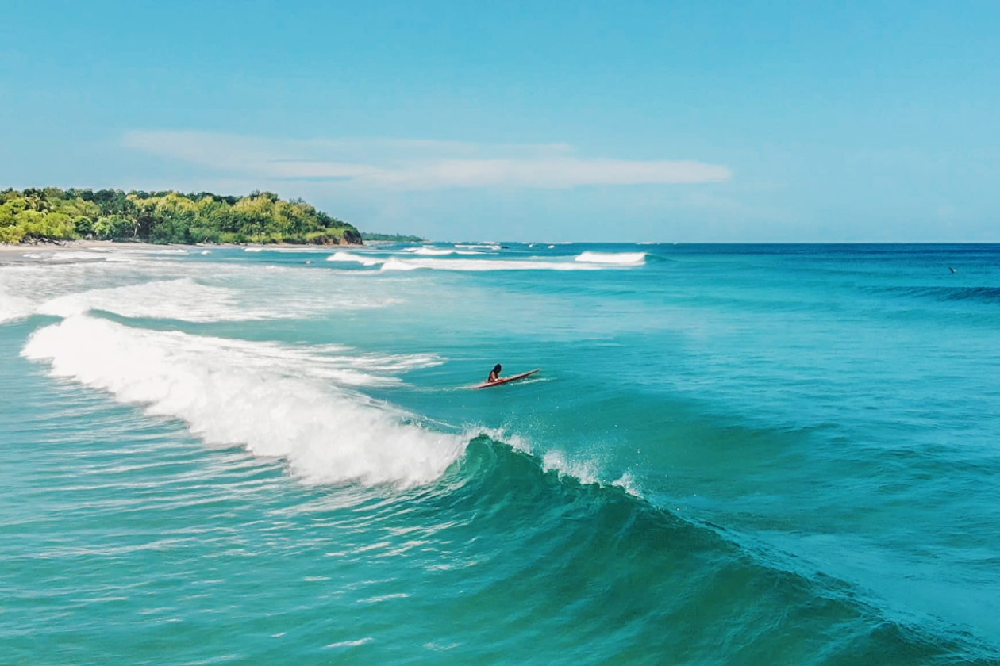
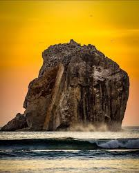
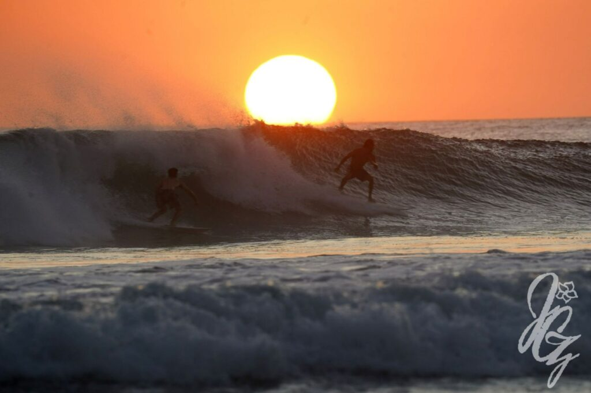
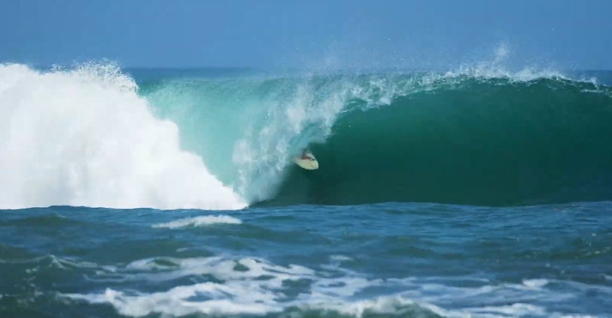
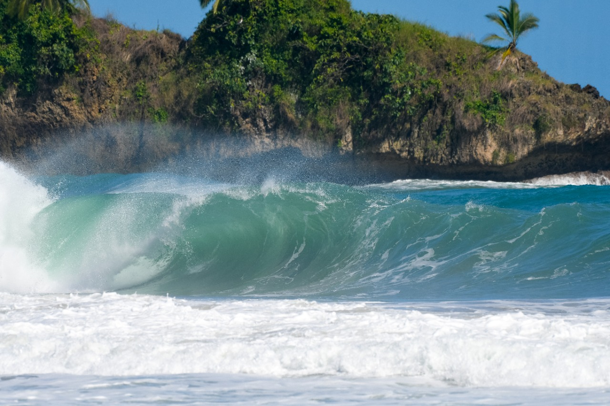
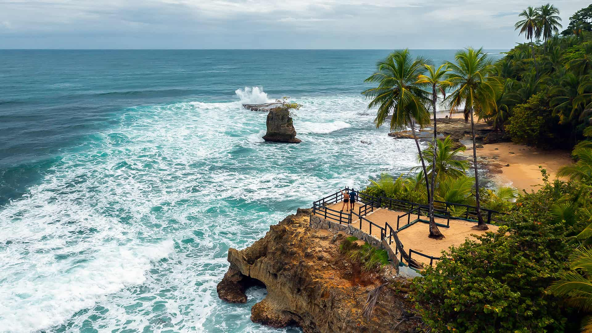

Playa Grande es famosa por sus olas consistentes y su ambiente relajado. Es ideal tanto para surfistas principiantes como para expertos. Además, es un lugar importante para la anidación de tortugas baula.

Ubicada en el Parque Nacional Santa Rosa, Roca Bruja es conocida por sus olas perfectas para surfistas avanzados. Rodeada de naturaleza virgen, es un destino icónico para los amantes del surf.

Santa Teresa es un paraíso para surfistas y viajeros. Con su ambiente bohemio, playas de arena blanca y olas consistentes, es uno de los destinos más populares en la península de Nicoya.

Puerto Viejo es conocido por su ambiente caribeño y su famosa ola "Salsa Brava", ideal para surfistas experimentados. Además, ofrece una vibrante cultura local y deliciosa gastronomía.

Playa Cocles es perfecta para surfistas principiantes y avanzados. Con su arena dorada y aguas cristalinas, es un lugar ideal para disfrutar del surf y la belleza natural del Caribe.

Manzanillo es un destino tranquilo con playas paradisíacas y arrecifes de coral. Aunque no es tan conocido por el surf, es ideal para quienes buscan relajarse y explorar la vida marina.